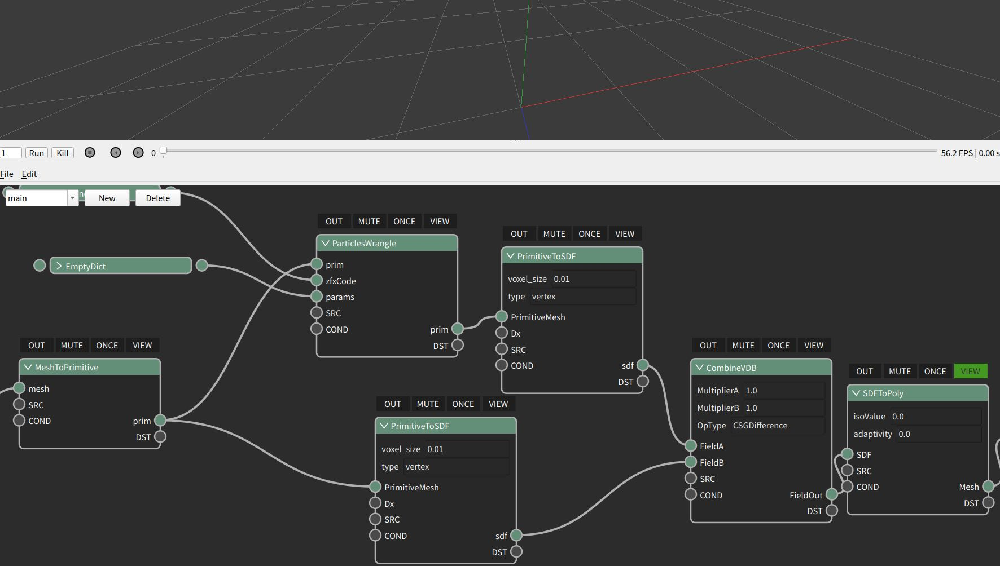
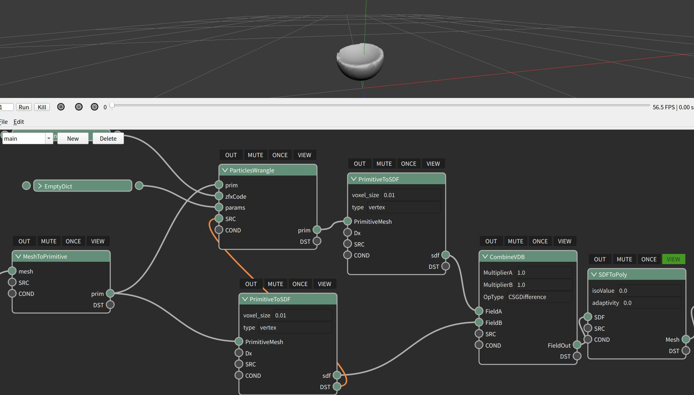
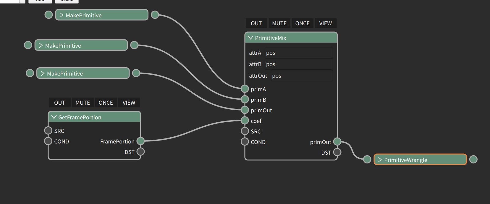

Example 2 Tag和连线,关键词¶

Zeno中的节点有以下几个重要的编辑概念¶
Control Tag¶
这些tag浮动于节点上方，被开启后会显示为绿色， 他们分别是：
Out：¶
当该Tag被点亮时，由ZENO节点图所定义的程序逻辑， 无论多么复杂， 到达该节点的通路上的前置计算节点（以及通路上所需要的数据和数据所需的前置计算结点）会被必然依序执行（每个frame）， 直到最后一个out节点为止。节点的执行顺序由zeno系统保证：任何一个被需要的节点必然在任何需要其的节点之前被执行。
Mute：¶
当该Tag被点亮时，相应的节点会被取消执行， 注意，这也许会在整个图中引入错误， 比如被跳过的节点正好将一个数据类型A转换为后续计算所需要的数据类型B时。谨慎使用。
Once：¶
当该Tag被点亮时， 所标记的节点只会在全局被执行一次。ZENO系统的最基本计算单位为substep（subframe）， 所有位于节点编辑器中的计算， 都会默认地被每个frame的每个subframe执行，然而很显然我们不是总需要这么做：比如读取一些与时间无关的静态的场景文件时，读取操作只需要执行一次。 对于这样的目的， 我们可以指定ONCE。
View：¶
被打了VIEW的节点， 其计算结果， 当是renderable的物体时，会进入到zeno的3D可视化窗口被可视化， 可视化的方法由zeno的可视化节点决定。被标记VIEW的节点， 其所有前置计算也会被正确执行。当一个frame存在多个subframe， 以及当一个被标记数据可能在计算顺序中被先后修改时，只有最后一个subframe的最后一次修改结果才会进入可视化界面进行可视化。
数据端口连线：¶

除了特殊端口，SRC，COND，DST以外的端口即数据端口，当一个右侧的数据端口被连向一个左侧的数据端口时，两个节点即构成了计算依赖关系， 前序节点会优先于后续节点被执行， 后续节点的数据输入为所对应连接的数据出口。特殊端口：DST， SRC除了数据依赖关系外， 可以通过DST和SRC连接来强制指定计算执行顺序， 考虑如下计算图：
在该流程所代表的计算图中， 我们企图对于读取的图形做CSG相减操作， 图形—->上路:对它的所有坐标乘以0.5(inplace修改)–>转换为SDF, 给予VDB combine A. —-> 下路: 转换为SDF, 给予VDB Combine B然而结果, 我们没有得到任何输出图形, 原因是上路的图形的操作是inplace的, 而这两个岔路的执行顺序是按照创建顺序, 当上路的primitive 被inplace修改结束后, 下路的primitive数据(同一个指针位置)也被修改了, 于是乎我们实际上是在对数值相同的Primitive进行SDF转换和CSG操作, 当然没有结果.
当出现对于数据的In-Place操作可能会修改其它分支链路的计算结果时, 我们可以通过DST->SRC强制修改节点执行的顺序, 如此, 原先的Primitive会被先转化为一个SDF, 再被进行缩放修改, 转化为另一个SDF, 如此,我们就会对两个数值不同的SDF进行CSG操作, 从而得到正确的结果.

zeno中提供了一些重要的节点对于系统级的变量(比如frame, time等的)进行设置和获取, 以支持用户在计算中出于不同的目的对于系统变量和状态进行控制和利用. 比如:
这将会在一个frame的subframe中对物体的形态按照系统变量framePortion(当前frame时间积分完成的百分比)进行插值, 提供更精细化的边界或者运动控制.

而{frame}字符将把目标数据在当前frame结束时自动命名为正确的序号名称并保存到硬盘上.
以上构成了zeno最基本的一些计算和操作概念, 我们将在之后的章节中通过更多的案例和练习深化这些概念, 带领大家往zeno的深水区进发.